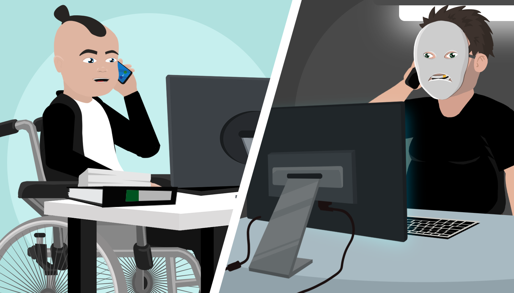

Ways to avoid social engineering attacks
Social engineering attacks are particularly difficult to counter because they're expressly designed to play on natural human characteristics, such as curiosity, respect for authority, and the desire to help one's friends. There are a number of tips that can help detect social engineering attacks…
Check the source
Take a moment to think about where the communication is coming from; don't trust it blindly. A USB stick turns up on your desk, and you don't know what it is? A phone call from out of the blue says you've inherited $5 million? An email from your CEO asking for a load of information on individual employees? All of these sound suspicious and should be treated as such.
Checking the source isn’t difficult. For instance, with an email, look at the email header and check against valid emails from the same sender. Look at where the links go - spoofed hyperlinks are easy to spot by simply hovering your cursor over them (do not click the link though!) Check the spelling: banks have whole teams of qualified people dedicated to producing customer communications, so an email with glaring errors is probably a fake.
If in doubt, go to the official website and get in contact with an official representative, as they will be able to confirm if the email/message is official or fake.
What do they know?
Does the source not have information you'd expect them to have, such as your full name, etc.? Remember, if a bank is phoning you, they should have all of that data in front of them and they will always ask security questions before allowing you to make changes to your account. If they don’t, then the chances of it being a fake email/call/message are significantly higher, and you should be wary.
Break the loop
Social engineering often depends on a sense of urgency. Attackers hope their targets will not think too hard about what's going on. So just taking a moment to think can deter these attacks or show them for what they are — fakes.
Ring the official number or go through the official website URL, rather than giving data out on the phone or clicking on a link. Use a different method of communication to check out the source's credibility. For instance, if you get an email from a friend asking you to wire money, text them on their mobile or call them to verify whether it’s really them.
Ask for ID
One of the easiest social engineering attacks is bypassing security to get into a building by carrying a large box or an armful of files. After all, some helpful person will hold the door open. Don’t fall for this. Always ask for ID.
The same applies to other approaches. Checking the name and number of whoever is calling or asking, "Who do you report to?" should be a basic response to requests for information. Then simply check the organization’s chart or phone directory before giving out any private information or personal data. If you don’t know the individual requesting the information and still don’t feel comfortable parting with the information, tell them you need to double check with someone else, and you will come back to them

Use a good spam filter
If your email program isn't filtering out enough spam or marking emails as suspicious, you might want to alter the settings. Good spam filters use various kinds of information to determine which emails are likely to be spam. They might detect suspicious files or links, they may have a blacklist of suspicious IP addresses or sender IDs, or they may analyze the content of messages to determine which are likely to be fake.
Is this realistic?
Some social engineering attacks work by trying to trick you into not being analytical and taking the time to assess whether the situation is realistic can help detect many attacks. For example:
- If your friend was really stuck in China with no way out, would they send you an email or would they ring you/ text you as well?
- Is it likely that a Nigerian prince left you a million dollars in his will?
- Would the bank ring up asking for your account details? In fact, many banks note when they send emails to their customers or talk to them on the phone. So double check if you’re not sure.
Don't go too fast
Be particularly wary when you feel a sense of urgency coming into a conversation. This is a standard way for malicious actors to stop their targets thinking the issue through. If you're feeling pressured, slow the whole thing down. Say you need time to get the information, you need to ask your manager, you don't have the right details with you right now — anything to slow things down and give yourself time to think.
Most of the time, social engineers won't push their luck if they realize they've lost the advantage of surprise.